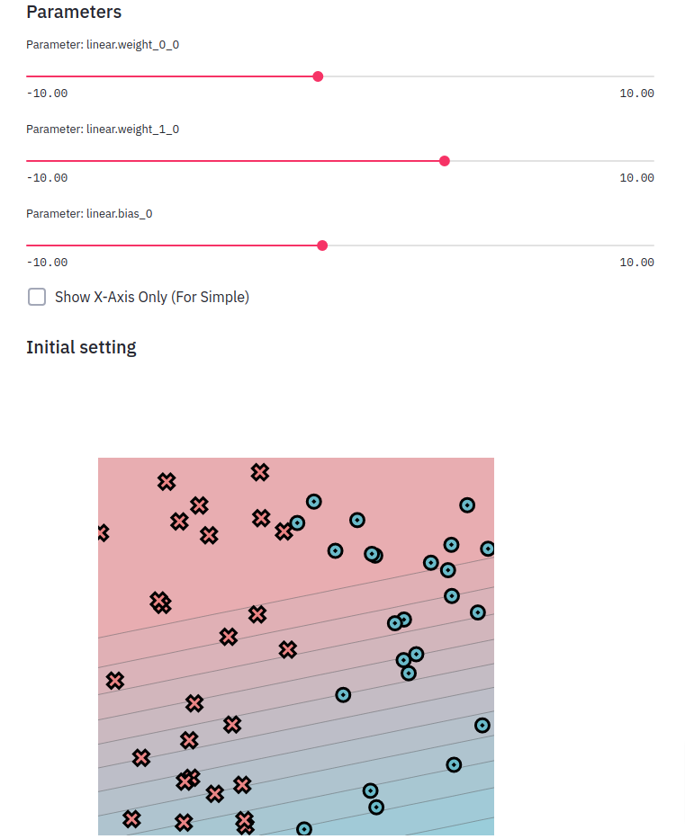

Fundamentals
This introductory module is focused on introducing several core software engineering methods for testing and debugging, and also includes some basic mathematical foundations.
Before starting this assignment, make sure to set up your workspace following the setup guide, to understand how the code should be organized.
Guides
Each module has a set of guides to help with the background material. We recommend working through the assignment and utilizing the guides suggested for each task.
Task 0.1: Operators
This task is designed to help you get comfortable with style checking and testing. We ask you to implement a series of basic mathematical functions. These functions are simple, but they form the basis of MiniTorch. Make sure that you understand each of them as some terminologies might be new.
Todo
Complete the following functions in minitorch/operators.py and pass
tests marked as task0_1.
minitorch.operators.mul(x: float, y: float) -> float
\(f(x, y) = x * y\)
minitorch.operators.id(x: float) -> float
\(f(x) = x\)
minitorch.operators.eq(x: float, y: float) -> float
\(f(x) =\) 1.0 if x is equal to y else 0.0
minitorch.operators.neg(x: float) -> float
\(f(x) = -x\)
minitorch.operators.add(x: float, y: float) -> float
\(f(x, y) = x + y\)
minitorch.operators.max(x: float, y: float) -> float
\(f(x) =\) x if x is greater than y else y
minitorch.operators.lt(x: float, y: float) -> float
\(f(x) =\) 1.0 if x is less than y else 0.0
minitorch.operators.sigmoid(x: float) -> float
\(f(x) = \frac{1.0}{(1.0 + e^{-x})}\)
(See https://en.wikipedia.org/wiki/Sigmoid_function )
Calculate as
\(f(x) = \frac{1.0}{(1.0 + e^{-x})}\) if x >=0 else \(\frac{e^x}{(1.0 + e^{x})}\)
for stability.
minitorch.operators.relu(x: float) -> float
\(f(x) =\) x if x is greater than 0, else 0
(See https://en.wikipedia.org/wiki/Rectifier_(neural_networks) .)
minitorch.operators.inv(x: float) -> float
\(f(x) = 1/x\)
minitorch.operators.inv_back(x: float, d: float) -> float
If \(f(x) = 1/x\) compute \(d \times f'(x)\)
minitorch.operators.relu_back(x: float, d: float) -> float
If \(f = relu\) compute \(d \times f'(x)\)
minitorch.operators.log_back(x: float, d: float) -> float
If \(f = log\) as above, compute \(d \times f'(x)\)
minitorch.operators.is_close(x: float, y: float) -> float
\(f(x) = |x - y| < 1e-2\)
Task 0.2: Testing and Debugging
We ask you to implement property tests for your operators from Task 0.1. These tests should ensure that your functions not only work but also obey high-level mathematical properties for any input. Note that you need to change arguments for those test functions.
Todo
Complete the test functions in tests/test_operators.py marked as
task0_2.
Task 0.3: Functional Python
To practice the use of higher-order functions in Python, implement three basic functional concepts. Use them in combination with operators described in Task 0.1 to build up more complex mathematical operations that work on lists instead of single values.
Todo
Complete the following functions in minitorch/operators.py and pass
tests marked as tasks0_3.
minitorch.operators.map(fn: Callable[[float], float]) -> Callable[[Iterable[float]], Iterable[float]]
Higher-order map.
See https://en.wikipedia.org/wiki/Map_(higher-order_function)
Parameters:
-
fn
(
Callable[[float], float]) –Function from one value to one value.
Returns:
-
Callable[[Iterable[float]], Iterable[float]]–A function that takes a list, applies
fnto each element, and returns a new list
minitorch.operators.negList(ls: Iterable[float]) -> Iterable[float]
Use map and neg to negate each element in ls
minitorch.operators.zipWith(fn: Callable[[float, float], float]) -> Callable[[Iterable[float], Iterable[float]], Iterable[float]]
Higher-order zipwith (or map2).
See https://en.wikipedia.org/wiki/Map_(higher-order_function)
Parameters:
-
fn
(
Callable[[float, float], float]) –combine two values
Returns:
-
Callable[[Iterable[float], Iterable[float]], Iterable[float]]–Function that takes two equally sized lists
ls1andls2, produce a new list by applying fn(x, y) on each pair of elements.
minitorch.operators.addLists(ls1: Iterable[float], ls2: Iterable[float]) -> Iterable[float]
Add the elements of ls1 and ls2 using zipWith and add
minitorch.operators.reduce(fn: Callable[[float, float], float], start: float) -> Callable[[Iterable[float]], float]
Higher-order reduce.
Parameters:
-
fn
(
Callable[[float, float], float]) –combine two values
-
start
(
float) –start value \(x_0\)
Returns:
-
Callable[[Iterable[float]], float]–Function that takes a list
lsof elements \(x_1 \ldots x_n\) and computes the reduction :math:fn(x_3, fn(x_2, fn(x_1, x_0)))
minitorch.operators.sum(ls: Iterable[float]) -> float
Sum up a list using reduce and add.
minitorch.operators.prod(ls: Iterable[float]) -> float
Product of a list using reduce and mul.
Task 0.4: Modules
This task is to implement the core structure of the :class:minitorch.Module
class. We ask you to implement a tree data structure that
stores named :class:minitorch.Parameter on each node. Such a data structure
makes it
easy for users to create trees that can be walked to find all of the
parameters of
interest.
To experiment with the system use the Module Sandbox:
>>> streamlit run app.py -- 0
Todo
Complete the functions in minitorch/module.py and pass tests marked as
tasks0_4.
minitorch.module.Module.train() -> None
Set the mode of this module and all descendent modules to train.
minitorch.module.Module.eval() -> None
Set the mode of this module and all descendent modules to eval.
minitorch.module.Module.named_parameters() -> Sequence[Tuple[str, Parameter]]
Collect all the parameters of this module and its descendents.
Returns:
-
Sequence[Tuple[str, Parameter]]–The name and
Parameterof each ancestor parameter.
minitorch.module.Module.parameters() -> Sequence[Parameter]
Enumerate over all the parameters of this module and its descendents.
Task 0.5: Visualization
For the first few assignments, we use a set of datasets implemented in
minitorch/datasets.py,
which are 2D point classification datasets. (See TensorFlow Playground
for similar examples.) Each of these dataset can be added to the visualization.
To experiment with the system use:
streamlit run app.py -- 0
Read through the code in project/run_torch.py to get a sneak peek of
an implementation of a model for these datasets using Torch.
You can also provide a model that attempts to perform the classification by manipulating the parameters.

Todo
Start a streamlit server and print an image of the dataset. Hand-create classifiers that split the linear dataset into the correct colors.
Add the image in the README file in your repo along with the parameters that your used.